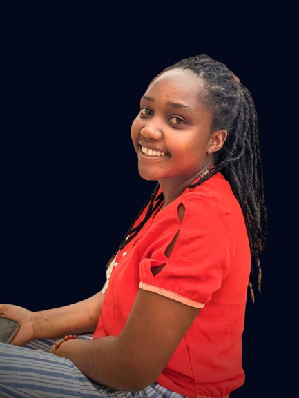

LAETITIA
NIKUZWE
Frontend developer &

- +250782025442
- +250738316784
- nikuzwelaetitia@gmail.com
- Kigali, Nyamirambo
ABOUT ME
I'm a software developer and still learning more related to software I have always been passionate about technology. I choose to pursue a career in engineering because i believe that it is a field that has the potential to make a real difference in the world, where i'm in final year in University of Rwanda in electronics and telecommunication engineering student.
EDUCATION
- Bachelor in Electronics and Telecommunication
- 2019 - Ongoing
- I have learnt embedded system, Microproccessor including 8085 Architecture, addressing mode, interrupt,etc Analogue and Digital communication like FM, AM amplifiers and more.
- High school certificate in Mathematics, Physics and Geography
- 2016 - 2018
- Statistics, Probability to provide information about the likelihood that something will happen.Integral and the basic knowledge in geography.
- Software Development
- Ongoing three months program
- We cover HTML, CSS and still studying JavaScript and react all Front-end requirement
University of Rwanda, CST
Saint Alphonse Mubuga
Igire Rwanda, SheCanCode
Skills
Javascript
45%
C++
45%
Ms Office
78%
Team work
75%
Time management
70%
HTML and CSS
80%